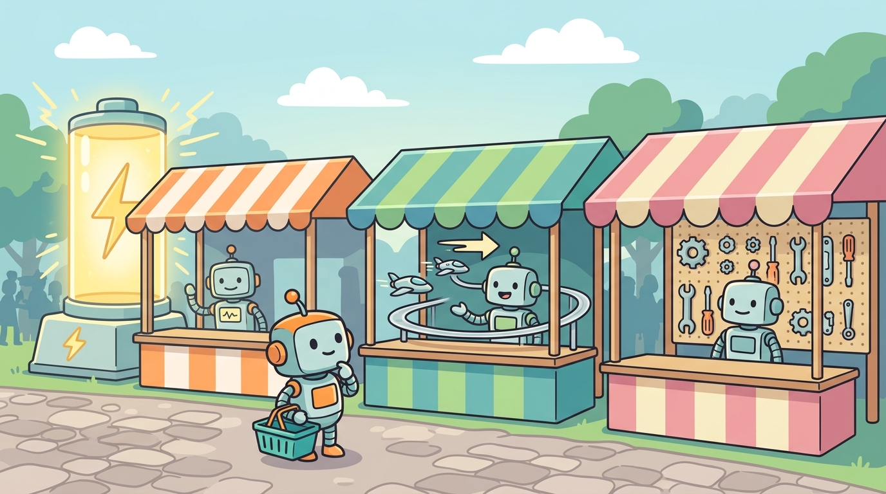

The best vendor today may be the worst lock-in tomorrow. Choose your dependencies as carefully as you choose your architecture.
A Resourceful Compass, Vendor-Skeptical AI Agent
The LLM ecosystem is expanding so rapidly that vendor selection has become a strategic capability in itself. New model providers, vector databases, agent frameworks, and evaluation platforms launch weekly. Choosing the wrong vendor can lock you into an inferior solution, while building everything in-house can drain engineering resources that should be spent on differentiation. This section provides structured evaluation frameworks for every major category in the LLM stack and a decision tree for the build-versus-buy question.
Prerequisites
Before starting, make sure you are familiar with ROI measurement from Section 65.1, the vector database fundamentals from Section 22.3 (since vector DB selection is a key vendor decision), and the agent framework concepts from Section 26.1 that inform build-versus-buy decisions for agent tooling.

65.2.1 LLM Provider Evaluation
You chose a provider based on benchmark scores, and three months later they quietly deprecate your model version. Another team picked the cheapest option and discovered the latency was unusable for real-time applications. Vendor selection requires balancing quality, cost, latency, privacy, and reliability across dimensions that interact in non-obvious ways. The model landscape from Section 8.1 and Section 8.2 provides context for understanding each provider's positioning.
A common vendor evaluation pitfall: choosing a provider because they top a leaderboard, then discovering the benchmark used zero-shot prompts while your use case requires retrieval-augmented generation with domain-specific context. Benchmarks measure the test, not your application.
Evaluating LLM vendors is like a procurement team scoring suppliers for a manufacturing plant. You would never pick a steel supplier based solely on price per ton; you also evaluate delivery reliability, quality consistency, contract flexibility, and what happens if they go out of business. The weighted scoring rubric for LLM providers works the same way: benchmark scores are just one dimension alongside latency, privacy guarantees, ecosystem maturity, and the risk of model deprecation. The critical difference: LLM "suppliers" can change their product overnight with a model update, so ongoing evaluation matters more than initial selection.
from dataclasses import dataclass, field
from typing import Dict, List
@dataclass
class ProviderEvaluation:
"""Weighted scoring rubric for LLM provider evaluation."""
name: str
scores: Dict[str, float] # dimension -> score (1-5)
# Default weights (adjust per use case)
WEIGHTS: Dict[str, float] = field(default_factory=lambda: {
"quality": 0.25, # benchmark performance, instruction following
"pricing": 0.20, # cost per million tokens, volume discounts
"latency": 0.15, # TTFT, tokens/sec, P99 response time
"privacy": 0.15, # data retention, SOC2, HIPAA, GDPR
"reliability": 0.10, # uptime SLA, rate limits, error rates
"ecosystem": 0.10, # SDKs, integrations, documentation
"flexibility": 0.05, # fine-tuning, custom models, function calling
})
def weighted_score(self) -> float:
return sum(self.scores.get(dim, 0) * weight
for dim, weight in self.WEIGHTS.items())
# Evaluate three providers for a customer support use case
providers = [
ProviderEvaluation("OpenAI", {
"quality": 4.8, "pricing": 3.5, "latency": 4.2,
"privacy": 3.8, "reliability": 4.0, "ecosystem": 4.8,
"flexibility": 4.5,
}),
ProviderEvaluation("Anthropic", {
"quality": 4.7, "pricing": 3.8, "latency": 4.0,
"privacy": 4.5, "reliability": 4.2, "ecosystem": 3.8,
"flexibility": 3.5,
}),
ProviderEvaluation("Google (Gemini)", {
"quality": 4.5, "pricing": 4.2, "latency": 4.3,
"privacy": 4.0, "reliability": 4.5, "ecosystem": 4.2,
"flexibility": 4.0,
}),
]
ranked = sorted(providers, key=lambda p: p.weighted_score(), reverse=True)
for p in ranked:
print(f"{p.name:20s} Weighted Score: {p.weighted_score():.2f}/5.00")These scores are illustrative and will change as providers update their offerings. The important takeaway is the framework, not the specific scores. Run your own evaluation with your actual workload: send 500 representative prompts to each provider and measure quality, latency, and cost on your data. Benchmark results on public datasets do not reliably predict performance on domain-specific tasks.
Calculate the total cost of ownership for your LLM feature: include API costs (or GPU costs), engineering time, data preparation, evaluation, monitoring, and incident response. Divide by the number of users or the revenue it generates. Most teams are surprised to discover that engineering and ops costs exceed API costs by 3 to 5x. Understanding your true unit economics guides better build-vs-buy decisions.
Before committing to an LLM provider, run a one-week "shadow evaluation" where you send the same 500 production queries to two or three candidate providers and compare cost, latency, and output quality. This concrete, domain-specific data is worth more than any public benchmark. It also gives you a fallback provider if your primary choice has an outage or a pricing increase.
65.2.2 Vector Database Evaluation
Vector databases are critical infrastructure for RAG systems (as introduced in Chapter 23). The choice of vector database affects query latency, recall accuracy, operational complexity, and total cost of ownership.
| Database | Type | Managed Option | Filtering | Max Vectors | Best For |
|---|---|---|---|---|---|
| Pinecone | Purpose-built | Fully managed | Metadata + hybrid | Billions | Quick start, no ops team |
| Weaviate | Purpose-built | Cloud + self-host | GraphQL + hybrid | Billions | Complex queries, multi-modal |
| Qdrant | Purpose-built | Cloud + self-host | Rich filtering | Billions | Performance-critical, Rust-based |
| pgvector | Extension | Any Postgres host | Full SQL | Millions | Existing Postgres; small to medium scale |
| Chroma | Purpose-built | Cloud + embedded | Metadata | Millions | Prototyping, embedded use |
from dataclasses import dataclass
@dataclass
class VectorDBEval:
"""Evaluation scorecard for vector databases."""
name: str
query_latency_ms: float # P95 for 1M vectors
recall_at_10: float # recall@10 on standard benchmark
ops_complexity: int # 1-5 (1=fully managed, 5=complex)
monthly_cost_1m_vectors: float
has_hybrid_search: bool
def value_score(self) -> float:
"""Higher is better: recall and latency matter most."""
latency_score = max(0, 5 - self.query_latency_ms / 10)
recall_score = self.recall_at_10 * 5
ops_score = (6 - self.ops_complexity) # invert: lower complexity = higher score
return (latency_score * 0.3 + recall_score * 0.4
+ ops_score * 0.2 + (1 if self.has_hybrid_search else 0) * 0.1 * 5)
dbs = [
VectorDBEval("Pinecone", 12, 0.95, 1, 70, True),
VectorDBEval("Qdrant", 8, 0.96, 3, 45, True),
VectorDBEval("pgvector", 25, 0.91, 2, 20, False),
VectorDBEval("Weaviate", 15, 0.94, 2, 55, True),
VectorDBEval("Chroma", 20, 0.90, 1, 15, False),
]
ranked = sorted(dbs, key=lambda d: d.value_score(), reverse=True)
for db in ranked:
print(f"{db.name:12s} Score: {db.value_score():.2f} "
f"Latency: {db.query_latency_ms:>4.0f}ms "
f"Cost: ${db.monthly_cost_1m_vectors}/mo")65.2.3 Agent Framework Evaluation
Agent frameworks provide the orchestration layer for multi-step LLM applications. The choice of framework affects development speed, debugging experience, production reliability, and vendor lock-in risk.
| Framework | Abstraction Level | Observability | Streaming | Production Ready | Learning Curve |
|---|---|---|---|---|---|
| LangChain | High (chains, agents) | LangSmith integration | Yes | Moderate | Medium |
| LlamaIndex | High (data connectors) | Built-in tracing | Yes | Moderate | Medium |
| Semantic Kernel | Medium (plugins) | Azure integration | Yes | High (.NET/Java) | Medium |
| OpenAI SDK (native) | Low (direct API) | Manual | Yes | High | Low |
| Custom (no framework) | None | Manual | Manual | Depends on team | Highest initial |
The trend in production LLM applications is moving toward thinner frameworks or no framework at all. Many teams that started with high-abstraction frameworks like LangChain have migrated to direct API calls with custom orchestration because they needed more control over retry logic, token management, and error handling. Start with a framework for prototyping, but plan for the possibility that production code may be simpler without one.
65.2.4 Build vs. Buy Decision Tree
Build-vs-buy decisions depend on data moats, not model quality. In the LLM ecosystem, model quality is a rapidly moving target: today's state-of-the-art API becomes tomorrow's commodity. The decision to build (self-host, fine-tune, train) should hinge on whether you have proprietary data that creates a durable competitive advantage. If your advantage comes from unique training data, domain-specific evaluation sets, or proprietary feedback loops, building makes sense because those assets appreciate in value over time. If your advantage comes from being first to market with a clever prompt, buying (API) makes more sense because a better prompt can be replicated in hours. The infrastructure cost analysis in Section 65.5 quantifies when self-hosting becomes economically rational.
The build-versus-buy decision for LLM components depends on whether the capability is a competitive differentiator, the team's ability to maintain it, and the total cost of ownership over a 12 to 36 month horizon. Figure 60.4.1 provides a decision tree to navigate these choices systematically.
# implement tco_comparison
def tco_comparison(
# Build costs
build_dev_months: float,
build_engineer_monthly: float,
build_infra_monthly: float,
build_maintenance_fte: float,
# Buy costs
buy_license_monthly: float,
buy_integration_months: float,
buy_integration_engineer_monthly: float,
# Horizon
horizon_months: int = 36,
) -> dict:
"""Compare total cost of ownership for build vs. buy over N months."""
# Build TCO
build_dev = build_dev_months * build_engineer_monthly * 2 # 2 engineers
build_infra = build_infra_monthly * horizon_months
build_maint = build_maintenance_fte * build_engineer_monthly * horizon_months
build_total = build_dev + build_infra + build_maint
# Buy TCO
buy_integration = buy_integration_months * buy_integration_engineer_monthly
buy_license = buy_license_monthly * horizon_months
buy_total = buy_integration + buy_license
return {
"build_tco": round(build_total),
"buy_tco": round(buy_total),
"recommendation": "BUILD" if build_total < buy_total else "BUY",
"savings": round(abs(build_total - buy_total)),
"savings_percent": round(
abs(build_total - buy_total) / max(build_total, buy_total) * 100, 1
),
}
# Example: RAG pipeline (build custom vs. use managed platform)
result = tco_comparison(
build_dev_months=3,
build_engineer_monthly=15_000,
build_infra_monthly=2_000,
build_maintenance_fte=0.25,
buy_license_monthly=5_000,
buy_integration_months=1,
buy_integration_engineer_monthly=15_000,
horizon_months=36,
)
for k, v in result.items():
print(f" {k}: {v}")TCO calculations often underestimate build costs by 30 to 50% because they exclude opportunity cost (what else could the engineers be building?), recruitment time for specialized talent, and the maintenance burden that grows as the system ages. When in doubt, multiply your build estimate by 1.5x and compare again. If the decision flips, the choice is closer than it appears and deserves deeper analysis.
1. What are the seven dimensions in the LLM provider evaluation rubric?
Show Answer
2. When should you consider using pgvector instead of a purpose-built vector database?
Show Answer
3. Why is the trend in production LLM applications moving toward thinner or no frameworks?
Show Answer
4. In the build vs. buy decision tree, what is the first question and why?
Show Answer
5. Why should build cost estimates be multiplied by 1.5x in TCO comparisons?
Show Answer
Who: A VP of Engineering and a procurement lead at a logistics company
Situation: The company needed to extract structured data from shipping documents (bills of lading, customs forms, packing lists) using LLMs. Two options were on the table: build a custom pipeline with open-source models or buy a specialized document AI platform.
Problem: The vendor solution cost \$180K per year but handled 95% of document types out of the box. Building in-house would require 3 ML engineers for 4 months (\$240K in loaded salary) plus ongoing maintenance estimated at \$60K per year.
Dilemma: The vendor solution locked them into a proprietary API with limited customization. The custom build offered full control but required recruiting ML talent that was difficult to hire.
Decision: They applied the build vs. buy decision tree. Since document extraction was not a competitive differentiator (their advantage was logistics optimization, not AI), they chose the vendor solution. They negotiated a contract with data portability guarantees and API compatibility with standard formats.
How: They ran a 4-week proof of concept with 500 real documents, scoring the vendor against their weighted rubric: accuracy (40%), latency (20%), cost (20%), and integration effort (20%). The vendor scored 8.2 out of 10.
Result: The vendor solution was in production within 6 weeks (versus the estimated 4 months for a custom build). Year 1 total cost was \$195K (including integration) versus the estimated \$300K for build. The engineering team was freed to focus on the core logistics optimization product.
Lesson: Build what differentiates you; buy commodities. Non-differentiating AI infrastructure should be purchased to preserve engineering capacity for work that creates competitive advantage.
- Use weighted scoring rubrics: Evaluate providers and tools across multiple dimensions with weights that reflect your specific use case priorities.
- Test on your data: Benchmark results and vendor claims do not predict performance on domain-specific tasks. Always run 500+ representative queries through each candidate.
- Match vector DB to scale: pgvector works for millions of vectors; purpose-built databases (Qdrant, Pinecone) are needed for billions with sub-10ms latency requirements.
- Start with frameworks, prepare to outgrow them: Use LangChain or LlamaIndex for prototyping but plan for the possibility that production code may be simpler without a framework.
- Build differentiators, buy commodities: The decision tree starts with whether the capability provides competitive advantage. Non-differentiating infrastructure should be bought.
- Add 50% to build estimates: TCO comparisons routinely underestimate build costs due to opportunity cost, talent acquisition, and maintenance growth.
Get a minimal LLM feature in front of real users as fast as possible. Real user behavior reveals requirements that no amount of internal testing can predict. Use the feedback to decide whether to invest more or pivot.
Open Questions:
- How should organizations evaluate the risk of vendor lock-in when using proprietary LLM APIs? Switching costs include prompt rewriting, evaluation rebuilding, and behavior drift, none of which are captured in API pricing.
- When does building custom (fine-tuned or self-hosted) models make economic sense versus using commercial APIs? The break-even analysis depends on volume, latency requirements, and data sensitivity.
Recent Developments (2024-2025):
- Open-weight model convergence (2024-2025) narrowed the quality gap between proprietary and open models (Llama 3, Mistral, Qwen), making self-hosting a viable option for a wider range of use cases.
- Model router services (2024-2025) like Martian, Unify, and similar tools enabled automatic routing between providers based on cost, latency, and quality, reducing vendor lock-in risk.
Explore Further: Run the same evaluation suite on a proprietary model (GPT-4o or Claude) and a comparable open-weight model (Llama 3 70B or Mistral Large). Calculate cost per query for each and determine at what volume self-hosting becomes cheaper.
Exercises
List the six most important criteria for evaluating an LLM API provider. For each criterion, explain how to measure it objectively.
Answer Sketch
(1) Quality: run your evaluation suite on each provider's model and compare scores. (2) Latency: measure TTFT and total generation time under realistic load. (3) Cost: calculate per-query cost using your average token counts. (4) Reliability: track uptime and error rates over a trial period. (5) Privacy: review the provider's data handling policy and certifications (SOC 2, GDPR). (6) Model roadmap: assess the provider's track record of model updates and deprecation practices. Each criterion should be weighted by your specific requirements.
A healthcare company needs an LLM for summarizing patient records. Should they use a proprietary API, deploy an open-weights model, or fine-tune a custom model? Analyze the tradeoffs considering: data privacy, accuracy requirements, cost, and regulatory compliance.
Answer Sketch
Proprietary API: highest quality, lowest setup cost, but patient data leaves the organization (HIPAA concern). Open-weights deployment: data stays on-premises, moderate setup cost, good quality for medical text if the base model is strong. Fine-tuned model: highest accuracy for the specific task, data stays on-premises, but highest setup cost and ongoing maintenance. Recommendation: deploy an open-weights model (e.g., Llama 3) on-premises to satisfy HIPAA, then fine-tune on a curated dataset of medical summaries. The regulatory requirements eliminate the API option unless the provider has a BAA (Business Associate Agreement) in place.
Design an abstraction layer (in Python pseudocode) that allows your application to switch between LLM providers without changing business logic. Include a unified interface for completion, streaming, and embedding calls across OpenAI, Anthropic, and a local model.
Answer Sketch
Define an abstract base class LLMProvider with methods complete(prompt, **kwargs), stream(prompt, **kwargs), and embed(text). Implement concrete classes for each provider that translate the unified interface to provider-specific API calls. Use a factory function get_provider(name) that reads from configuration. This allows switching providers by changing a config value. Include response normalization so all providers return the same response format. Libraries like LiteLLM implement this pattern.
Compare three vector database options (Pinecone, Weaviate, Chroma) for a RAG application with 1 million documents. Evaluate on: performance, scalability, cost, ease of use, and self-hosting options.
Answer Sketch
Pinecone: fully managed, excellent performance, good scalability, but no self-hosting and higher cost at scale. Weaviate: open-source, self-hostable, strong hybrid search (dense + sparse), moderate learning curve. Chroma: simplest to start, open-source, good for prototypes, but less mature for production scale. For 1 million documents: Pinecone if you want managed simplicity and have budget; Weaviate if you need self-hosting and hybrid search; Chroma for prototyping and small-scale production. All three support the core operations needed for RAG.
Design a multi-provider LLM strategy that uses different providers for different tasks: a frontier model for complex reasoning, a smaller model for simple classification, and a self-hosted model for sensitive data. Describe the routing logic, failover mechanism, and cost optimization approach.
Answer Sketch
Routing: classify incoming requests by complexity (simple/medium/complex) and sensitivity (public/confidential/regulated). Simple + public: small model API (cheapest). Complex + public: frontier model API (highest quality). Any + confidential/regulated: self-hosted model (data stays internal). Failover: if the primary provider for a request class is unavailable, fall back to the next tier (e.g., frontier API fails, route to self-hosted model even if slightly lower quality). Cost optimization: cache frequent queries, batch where possible, and regularly re-evaluate the complexity classifier to route more queries to cheaper models. Track cost and quality per route to continuously optimize.
What Comes Next
In the next section, Section 65.5: LLM Compute Planning & Infrastructure, we conclude with compute planning and infrastructure strategy, ensuring your technical investments align with business goals.